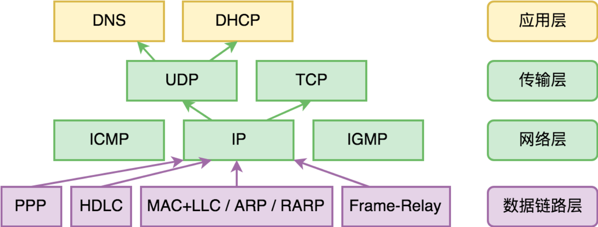
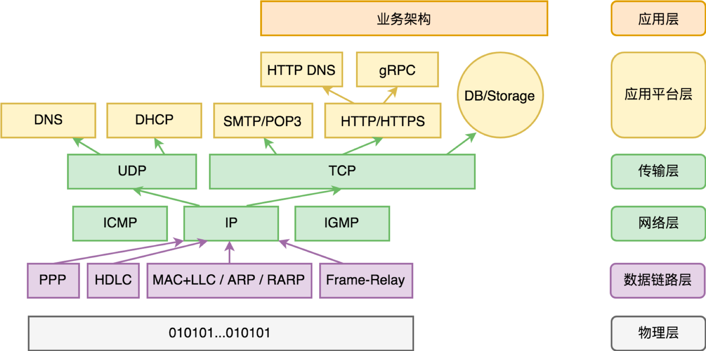

- 00 开篇词 怎样成长为优秀的软件架构师？.md.html
- 01 架构设计的宏观视角.md.html
- 02 大厦基石：无生有，有生万物.md.html
- 03 汇编：编程语言的诞生.md.html
- 04 编程语言的进化.md.html
- 05 思考题解读：如何实现可自我迭代的计算机？.md.html
- 06 操作系统进场.md.html
- 07 软件运行机制及内存管理.md.html
- 08 操作系统内核与编程接口.md.html
- 09 外存管理与文件系统.md.html
- 10 输入和输出设备：交互的演进.md.html
- 11 多任务：进程、线程与协程.md.html
- 12 进程内协同：同步、互斥与通讯.md.html
- 13 进程间的同步互斥、资源共享与通讯.md.html
- 14 IP 网络：连接世界的桥梁.md.html
- 15 可编程的互联网世界.md.html
- 16 安全管理：数字世界的守护.md.html
- 17 架构：需求分析 (上).md.html
- 18 架构：需求分析 (下) · 实战案例.md.html
- 19 基础平台篇：回顾与总结.md.html
- 20 桌面开发的宏观视角.md.html
- 21 图形界面程序的框架.md.html
- 22 桌面程序的架构建议.md.html
- 23 Web开发：浏览器、小程序与PWA.md.html
- 24 跨平台与 Web 开发的建议.md.html
- 25 桌面开发的未来.md.html
- 26 实战（一）：怎么设计一个“画图”程序？.md.html
- 27 实战（二）：怎么设计一个“画图”程序？.md.html
- 28 实战（三）：怎么设计一个“画图”程序？.md.html
- 29 实战（四）：怎么设计一个“画图”程序？.md.html
- 30 实战（五）：怎么设计一个“画图”程序？.md.html
- 31 辅助界面元素的架构设计.md.html
- 32 架构：系统的概要设计.md.html
- 33 桌面开发篇：回顾与总结.md.html
- 34 服务端开发的宏观视角.md.html
- 35 流量调度与负载均衡.md.html
- 36 业务状态与存储中间件.md.html
- 37 键值存储与数据库.md.html
- 38 文件系统与对象存储.md.html
- 39 存储与缓存.md.html
- 40 服务端的业务架构建议.md.html
- 41 实战（一）：“画图”程序后端实战.md.html
- 42 实战（二）：“画图”程序后端实战.md.html
- 43 实战（三）：“画图”程序后端实战.md.html
- 44 实战（四）：“画图”程序后端实战.md.html
- 45 架构：怎么做详细设计？.md.html
- 46 服务端开发篇：回顾与总结.md.html
- 47 服务治理的宏观视角.md.html
- 48 事务与工程：什么是工程师思维？.md.html
- 49 发布、升级与版本管理.md.html
- 50 日志、监控与报警.md.html
- 51 故障域与故障预案.md.html
- 52 故障排查与根因分析.md.html
- 53 过载保护与容量规划.md.html
- 54 业务的可支持性与持续运营.md.html
- 55 云计算、容器革命与服务端的未来.md.html
- 56 服务治理篇：回顾与总结.md.html
- 57 心性：架构师的修炼之道.md.html
- 58 如何判断架构设计的优劣？.md.html
- 59 少谈点框架，多谈点业务.md.html
- 60 架构分解：边界，不断重新审视边界.md.html
- 61 全局性功能的架构设计.md.html
- 62 重新认识开闭原则 (OCP).md.html
- 63 接口设计的准则.md.html
- 64 不断完善的架构范式.md.html
- 65 架构范式：文本处理.md.html
- 66 架构老化与重构.md.html
- 67 架构思维篇：回顾与总结.md.html
- 68 软件工程的宏观视角.md.html
- 69 团队的共识管理.md.html
- 70 怎么写设计文档？.md.html
- 71 如何阅读别人的代码？.md.html
- 72 发布单元与版本管理.md.html
- 73 软件质量管理：单元测试、持续构建与发布.md.html
- 74 开源、云服务与外包管理.md.html
- 75 软件版本迭代的规划.md.html
- 76 软件工程的未来.md.html
- 77 软件工程篇：回顾与总结.md.html
- 加餐 如何做HTTP服务的测试？.md.html
- 加餐 实战：“画图程序” 的整体架构.md.html
- 加餐 怎么保障发布的效率与质量？.md.html
- 热点观察 我看Facebook发币（上）：区块链、比特币与Libra币.md.html
- 热点观察 我看Facebook发币（下）：深入浅出理解 Libra 币.md.html
- 用户故事 站在更高的视角看架构.md.html
- 答疑解惑 想当架构师，我需要成为“全才”吗？.md.html
- 结束语 放下技术人的身段，用极限思维提升架构能力.md.html
- 课外阅读 从《孙子兵法》看底层的自然法则.md.html
- 捐赠
15 可编程的互联网世界
你好，我是七牛云许式伟。
前面我们讨论架构思维的时候说过，架构的第一步是做需求分析。需求分析之后呢？是概要设计。概要设计做什么？是做子系统的划分。它包括这样一些内容：
- 子系统职责范围的定义；
- 子系统的规格（接口），子系统与子系统之间的边界；
- 需求分解与组合的过程，系统如何满足需求、需求适用性（变化点）的应对策略。
对于我们理解这个精彩的互联网世界来说，理解它的子系统的划分思路是非常非常重要的。
网络应用程序的全视图
在上一讲 “[14 | IP 网络：连接世界的桥梁]” 中我们介绍了 IP 网络的工作原理。我们还画了一幅与数据传输这件事本身有关的网络协议图，如下：

那么，从一个典型的网络应用程序角度来说，它的完整视图又是什么样子的呢？

上图是我给出的答案。当然，它并不代表所有的网络应用程序，但这不影响我们借它的结构来解释网络世界是怎么划分子系统的，每个子系统都负责了些什么。
第一层是物理层。 你可以理解为网络设备的原生能力，它定义了硬件层次来看的基础网络协议。
第二层是数据链路层。 它负责解决的是局部网络世界的数据传输能力。网络数据传输技术会层出不穷，今天主流有固网、WiFi、3G/4G，明天有 5G/6G，未来也必然还会出现更快速的网络新技术。
这些网络技术虽然都有自己独特的链路层协议，但都可以很自然融入整个互联网世界。原因在于什么？在于 IP 网络。
所以第三层是 IP 网络层，它负责的是互联网世界的一体化，彼此包容与协作。 如果拿单机的应用程序的全视图来类比的话，IP 网络类似于单机体系中的操作系统。
在单机体系，操作系统是一台计算机真正可编程的开始。同样地，互联网世界的体系中，IP 网络是互联网 “操作系统” 的核心，是互联网世界可编程的开始。
第四层是 TCP/UDP 传输层。 它也是互联网 “操作系统” 的重要组成部分，和 IP 网络一起构成互联网 “操作系统” 的内核。IP 网络解决的是网如何通的问题，而传输层解决的是如何让互联网通讯可信赖的问题，从而大幅降低互联网应用程序开发的负担。
互联网并不是世界上的第一张网。但是只有拥有了 TCP/IP 这一层 “操作系统”，这才真正实现了网络价值的最大化：连接一切。
有了操作系统，应用软件才得以蓬勃发展。上图我们列出的应用层协议，仅仅只是沧海一粟。但是，要说当前最主流的应用层协议，无疑当属 HTTP 协议（超文本传输协议，HyperText Transfer Protocol）和 SMTP/POP3 协议了。
HTTP 协议是因为万维网（World Wide Web，简称 WWW）这个应用场景而诞生，冲着传输静态网页而去的。但是由于设计上的开放性，几经演进到今天，已经俨然成为一个通用传输协议了。
通用到什么程度？DNS 地址簿这样的基础协议，也搞出来一个新的 HTTP DNS。当然今天 HTTP DNS 还只是传统 DNS 协议的补充，使用还并不广泛。但由此可知人们对 HTTP 协议的喜爱。
除了呈现网页之外，HTTP 协议也经常被用来作为业务开放协议 RESTful API 的承载。另外，一些通用 RPC 框架也基于 HTTP 协议，比如 Google 的 gRPC 框架。
SMTP/POP3 协议是电子邮件（Email）应用所采用的，它们没有像 HTTP 协议那么被广泛借用，只是局限于电子邮件应用领域。但 SMTP/POP3 协议使用仍然极为广泛，原因是因为电子邮件是最通用的连接协议，它连接了人和人，连接了企业和企业。
我们都很佩服微信的成功，因为它连接了几乎所有的中国人。但是相比电子邮件，微信仍然只是小巫见大巫，因为电子邮件连接了世界上的每一个人和企业。
这是怎么做到的？因为开放的力量。如果说有谁能够打败微信，那么我个人一个基本的思考是：用微信的方式打败微信恐怕很难，但微信是封闭协议，开放也许是一个打败微信的机会？
还有其他很多应用层协议上图没有列出来，比如 FTP、NFS、Telnet 等等。它们大都应用范围相对小，甚至有一些渐渐有被 HTTP 协议替代的趋势。
对于一个网络应用程序来说，它往往还依赖存储和数据库（DB/Storage）。目前存储和数据库这块使用 HTTP 的还不多，除了对象存储（Object Storage），大部分还是直接基于 TCP 协议为主。
对象存储作为一种最新颖的存储类型，现在主流都是基于 HTTP 协议来提供 RESTful API，比如七牛云的对象存储服务。
所以你可以看到，网络应用程序所基于的基础平台，比单机软件要庞大得多。前面我们介绍的单机软件所依赖的 CPU + 编程语言 + 操作系统就不说了，它一样要依赖。
上图所示的网络世界所构建的庞大基础平台，从物理层 -> 数据链路层 -> 网络层 -> 传输层 -> 应用平台层，也都是我们业务架构的依赖点。选择自定义网络协议，基于 gRPC，还是基于 HTTP 提供 RESTful API ？这是架构师需要做出的决策之一。
应用层协议与网关
上一讲 “[14 | IP 网络：连接世界的桥梁]” 中我们谈到两台主机是如何通讯时，我们介绍了让局域网主机能够上网的 NAT 技术。NAT 网关本质上是一个透明代理（中间人），工作在网络协议的第四层，即传输层，基于 TCP/UDP 协议。
如果我们限定传输的数据包一定是某种应用层协议时，就会出现所谓的应用层网关，工作在网络协议的第七层，所以有时候我们也叫七层网关。
我们熟知的 Nginx、Apache 都可以用作应用层网关。应用层协议通常我们采用的是 HTTP/HTTPS 协议。
为什么 HTTP 协议这么受欢迎，甚至获得了传输层协议才有的待遇，出现专用的网关？
这得益于 HTTP 协议的良好设计。
我们一起来看一看 HTTP 协议长什么样。先看获取资源的 GET 请求（Request）：
GET /abc/example?id=123 HTTP/1.1
Host: api.qiniu.com
User-Agent: curl/7.54.0
Accept: */*
HTTP 协议的请求（Request）分协议头和正文两部分，中间以空行分隔。GET 请求一般正文为空。
协议头的第一行是请求的命令行，具体分为三部分，以空格分隔。第一部分为命令，常见有 GET、HEAD、PUT、POST、DELETE 等。第二部分是请求的资源路径。第三部分为协议版本。
协议头从第二行开始，每行均为请求的上下文环境或参数，我们不妨统一叫字段（Field）。格式为：
字段名: 字段值
HTTP 服务器收到一个请求后，往往会返回这样一个回复（Response）：
HTTP/1.1 200 OK
Content-Type: text/html; charset=utf-8
Content-Length: 68
ETag: W/"fb751fe2cb812eb5d466ed9e3c3cd519"
<html><head><title>Hello</title></head><body>qiniu.com</body></html>
HTTP 请求（Request）和回复（Response）格式上只有第一行不同。回复的第一行也分为三部分，以空格分割。
第一部分为协议版本。
第二部分是状态码（Status Code），用来表征请求的结果，200 表示成功，4xx 通常表示请求（Request）本身不合法，5xx 则通常表示 HTTP 服务器有异常。
第三部分是状态文本（Status Text），方便接收方看到回复后可以立刻判断问题，而不用去查状态码对应的文档。
当协议正文非空的时候，往往还需要用 Content-Type 字段来指示协议正文的格式。例如这里我们用 text/html 表征返回的协议正文是一个 html 文档。Content-Length 字段则用来指示协议正文的长度。
我们再来看一下修改资源的 POST 请求：
POST /abc/example HTTP/1.1
Host: api.qiniu.com
User-Agent: curl/7.54.0
Authorization: Qiniu dXNlcj14dXNoaXdlaSZwYXNzd2Q9MTIzCg
Content-Type: application/x-www-form-urlencoded;charset=utf-8
Content-Length: 18
id=123&title=Hello
和 GET 不一样，修改资源往往需要授权，所以往往会有 Authorization 字段。另外这里我们用 Content-Type 字段表示我们协议正文用了表单（form）格式。
最后我们看下删除资源的 DELETE 请求：
DELETE /abc/example HTTP/1.1
Host: api.qiniu.com
User-Agent: curl/7.54.0
Authorization: Qiniu dXNlcj14dXNoaXdlaSZwYXNzd2Q9MTIzCg
Content-Type: application/json
Content-Length: 11
{"id": 123}
删除和修改完全类似。除了我这里刻意换了一种 Content-Type，协议正文用 json 格式了。实际业务中当然不是这样，通常会选择一致的表达方法。
大致了解了 HTTP 协议的样子，我们一起来分析一下它到底好在哪里？
毫无疑问，最关键的是它的协议头设计。具体表现在如下这些方面。
- 极其开放的协议头设计。虽然 HTTP 定义了很多标准的协议头字段（Field），但是用户还是可以加自己的字段，惯例上以 X- 开头。例如，七牛引入了 X-Reqid 作为请求的内部调用过程的跟踪线索。关于 X-Reqid 本专栏后续我们还会继续谈到。
- 规范了业务的表达范式。虽然业务有千千万万种可能，但是实质上不外乎有什么资源，以及对资源的 CURD（创建-修改-读取-删除）。相对应地，在HTTP 协议中以 “资源路径” 表达资源，以 PUT-POST-GET-DELETE 表达 CURD 操作（也有一些服务以 POST 而不是用 PUT 请求来创建资源）。
- 规范了应用层的路由方式。我们知道，在传输层网络的路由基于 IP 地址，但是对于应用而言，IP 地址是一个无意义的字段，在 HTTP 协议头中，有一个字段是强制的，那就是 Host 字段，它用来表征请求的目标主机。通常，在正式生产环境下它是个域名，比如 api.qiniu.com 。以域名来表征目标主机，无疑更加能够体现业务特性。故而，对应用层而言，“域名+资源路径” 是更好的路由依据，方便进行业务的切分。
正因为 HTTP 协议的这些好处，逐渐地它成为了网络应用层协议的模板。无论业务具体是什么样子的，都可以基于 HTTP 协议表达自己的业务逻辑。
TCP/IP 层编程接口
理解清楚了我们网络应用程序的结构，也理解了我们最主流的应用层协议 HTTP 协议，那么我们就可以考虑去实现一个互联网软件了。
从编程接口来说，网络的可编程性是从网络层 IP 协议开始。这是最底层的网络 “操作系统” 的能力体现。
从基于 IP 协议的网络视角来看，数据并不是源源不断的流（stream），而是一个个大小有明确限制的 IP 数据包。IP 协议是无连接的，它可以在不连接对方的情况下向其发送数据。规格示意如下：
package net
type IPAddr struct {
IP IP
Zone string // IPv6 scoped addressing zone
}
func DialIP(network string, laddr, raddr *IPAddr) (*IPConn, error)
func ListenIP(network string, laddr *IPAddr) (*IPConn, error)
func (c *IPConn) Read(b []byte) (int, error)
func (c *IPConn) ReadFrom(b []byte) (int, Addr, error)
func (c *IPConn) ReadFromIP(b []byte) (int, *IPAddr, error)
func (c *IPConn) Write(b []byte) (int, error)
func (c *IPConn) WriteTo(b []byte, addr Addr) (int, error)
func (c *IPConn) WriteToIP(b []byte, addr *IPAddr) (int, error)
func (c *IPConn) Close() error
IP 协议本身只定义了数据的目标 IP，那么这个 IP 地址对应的计算机收到数据后，究竟应该交给哪个软件应用程序来处理收到的数据呢？
为了解决这个问题，在 IP 协议的基础上定义了两套传输层的协议：UDP 和 TCP 协议。它们都引入了端口（port）的概念。
端口很好地解决了软件间的冲突问题。一个IP地址+端口，我们通常记为 ip:port，代表了软件层面上来说唯一定位的通讯地址。每个软件只处理自己所使用的 ip:port 的数据。
当然，既然 IP 和端口被传输层一起作为唯一地址，端口上一定程度上缓解了 IPv4 地址空间紧张的问题。
虽然从设计者的角度来说，最初端口的设计意图，更多是作为应用层协议的区分。例如 port = 80 表示 HTTP 协议，port = 25 表示 SMTP 协议。
应用协议的多样化很容易理解，这是应用的多样化决定的。尽管从架构的角度，我们并不太建议轻易去选择创造新的协议，我们会优先选择 HTTP 这样成熟的应用层协议。但是随着时间的沉淀，还是会不断诞生新的优秀的应用层协议。
但是，为什么需要有多套传输层的协议（TCP 和 UDP）呢？
还是因为应用需求是多样的。底层的 IP 协议不保证数据是否到达目标，也不保证数据到达的次序。出于编程便捷性的考虑，TCP 协议就产生了。
TCP 协议包含了 IP 数据包的序号、重传次数等信息，它可以解决丢包重传，纠正乱序，确保了数据传输的可靠性。
但是 TCP 协议对传输协议的可靠性保证，对某些应用场景来说并不是一个好特性。最典型的就是音视频的传输。在网络比较差的情况下，我们往往希望丢掉一些帧，但是由于 TCP 重传机制的存在，可能会反而加剧了网络拥塞的情况。
这种情况下，UDP 协议就比较理想，它在 IP 协议基础上的额外开销非常小，基本上可以认为除了引入端口（port）外并没有额外做什么，非常适合音视频的传输需求。
编程接口来说，TCP 的编程接口看起来是这样的：
package net
type TCPAddr struct {
IP IP
Port int
Zone string // IPv6 scoped addressing zone
}
func DialTCP(network string, laddr, raddr *TCPAddr) (*TCPConn, error)
func ListenTCP(network string, laddr *TCPAddr) (*TCPListener, error)
func (c *TCPConn) Read(b []byte) (int, error)
func (c *TCPConn) Write(b []byte) (int, error)
func (c *TCPConn) Close() error
func (l *TCPListener) Accept() (Conn, error)
func (l *TCPListener) AcceptTCP() (*TCPConn, error)
func (l *TCPListener) Close() error
UDP 的编程接口看起来是这样的：
package net
type UDPAddr struct {
IP IP
Port int
Zone string // IPv6 scoped addressing zone
}
func DialUDP(network string, laddr, raddr *UDPAddr) (*UDPConn, error)
func ListenUDP(network string, laddr *UDPAddr) (*UDPConn, error)
func (c *UDPConn) Read(b []byte) (int, error)
func (c *UDPConn) ReadFrom(b []byte) (int, Addr, error)
func (c *UDPConn) ReadFromUDP(b []byte) (int, *UDPAddr, error)
func (c *UDPConn) Write(b []byte) (int, error)
func (c *UDPConn) WriteTo(b []byte, addr Addr) (int, error)
func (c *UDPConn) WriteToUDP(b []byte, addr *UDPAddr) (int, error)
func (c *UDPConn) Close() error
对比看，IP 和 UDP 的区别非常小，都是无连接的协议，唯一差别就是 UDPAddr 在 IPAddr 基础上增加了一个端口。也正因为如此，我们很少有应用程序会直接基于 IP 协议来编程。
客户端来说，无论 TCP 还是 UDP，使用方式都很像，其示意代码如下：
c, err := net.Dial("tcp", addrServer)
c.Write(...)
c.Read(...)
c.Close()
net.Dial 背后会根据 network 字段选择调用 DialTCP 还是 DialUDP。然后我们就像操作一个文件一样来操作就行，理解上非常简单，只是 UDP 的读写在应用层面需要考虑可能会丢包。
但是服务端不太一样。服务端并不知道谁会给自己发信息，它只能监听自己的 “邮箱”，不时看看是不是有人来信了。
对于 TCP 协议，服务端示意代码如下：
l, err := net.Listen("tcp", addrServer)
for {
c, err := l.Accept()
if err != nil {
错误处理
continue
}
go handleConnection(c)
}
对于 UDP 协议，服务端示意代码如下：
c, err := net.ListenUDP("udp", addrServer)
for {
n, srcAddr, err := c.ReadFromUDP(...)
if err != nil {
错误处理
continue
}
// 根据 srcAddr.IP+port 确定是谁发过来的包，怎么处理
}
由于 TCP 基于连接（connection），所以每 Accept 一个连接后，我们可以有一个独立的执行体（goroutine）去处理它。但是 UDP 是无连接的，需要我们手工根据请求的来源 IP+port 来判断如何分派。
HTTP 层编程接口
尽管基于 TCP/IP 层编程是一个选择，但是在当前如果没有特殊的理由，架构师做业务架构的时候，往往还是优先选择基于 HTTP 协议。
我们简单来看一下 HTTP 层的编程接口：
package http
func Get(url string) (*Response, error)
func Post(url, contentType string, body io.Reader) (*Response, error)
func PostForm(url string, data url.Values) (*Response, error)
func NewRequest(method, url string, body io.Reader) (*Request, error)
var DefaultClient = new(Client)
func (c *Client) Do(req *Request) (*Response, error)
func NewServeMux() *ServeMux
func (mux *ServeMux) Handle(pattern string, handler Handler)
func (mux *ServeMux) HandleFunc(pattern string, handler func(ResponseWriter, *Request))
func ListenAndServe(addr string, handler Handler) error
func ListenAndServeTLS(addr, certFile, keyFile string, handler Handler) error
对于 HTTP 客户端，使用上要比 TCP/UDP 简单得多，常见情况下直接调用 Get、Post 这些函数调用就满足业务需求。
在需要在 HTTP 协议头写一些额外字段的，会略微麻烦一点，需要先 NewRequest 生成一个请求，并添加一些字段（Field），然后再调用 Client.Do 去发起请求。整体上比调用 Read/Write 这样的基础 IO 函数要简便得多。
对于 HTTP 服务端，使用上的示意代码如下：
mux := http.NewServeMux()
mux.HandleFunc("/abc/example", handleAbcExampe)
mux.HandleFunc("/abc/hello/", handleAbcHello)
http.ListenAndServe(addServer, mux)
简单解释一下，一个 HTTP 服务器最基础的就是需要有根据 “资源路径” 的路由能力，这依赖 ServeMux 对象来完成。
简单对比可以看出，基于 HTTP 协议的编程接口，和基于 TCP/IP 协议裸写业务，其复杂程度完全不可同日而语。前者一个程序的架子已经呈现，基本上只需要填写业务逻辑就好。这也是采纳通用的应用层协议的威力所在。
结语
这一讲我们希望给大家呈现的是应用程序的全貌。当然，我们现在看到的仍然是非常高维的样子，后面在 “服务端开发” 一章，我们将进一步展开所有的细节。
在应用层协议介绍上，我们很难有全面的介绍，因而我们把侧重点放在 HTTP 协议的概要介绍上。同样，后面我们在 “服务端开发” 一章会进一步介绍 HTTP 协议。
最后，我们整理了基于 TCP/UDP 协议编程和基于 HTTP 协议编程的主体逻辑。虽然介绍非常简要，但通过对比我们仍然可以感受到业务架构基于成熟的应用层协议的优势所在。
如果你对今天的内容有什么思考与解读，欢迎给我留言，我们一起讨论。网络编程本章就到此结束，后面我们有专门的章节来进一步展开。下一讲，我们将探讨操作系统的最后一个子系统：安全管理。
如果你觉得有所收获，也欢迎把文章分享给你的朋友。感谢你的收听，我们下期再见。
© 2019 - 2023 Liangliang Lee. Powered by gin and hexo-theme-book.